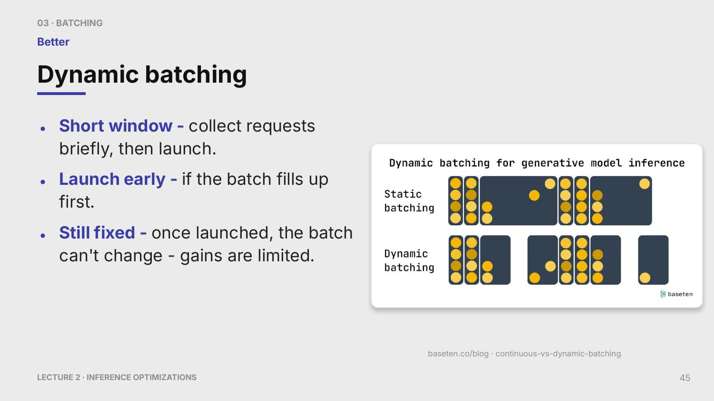
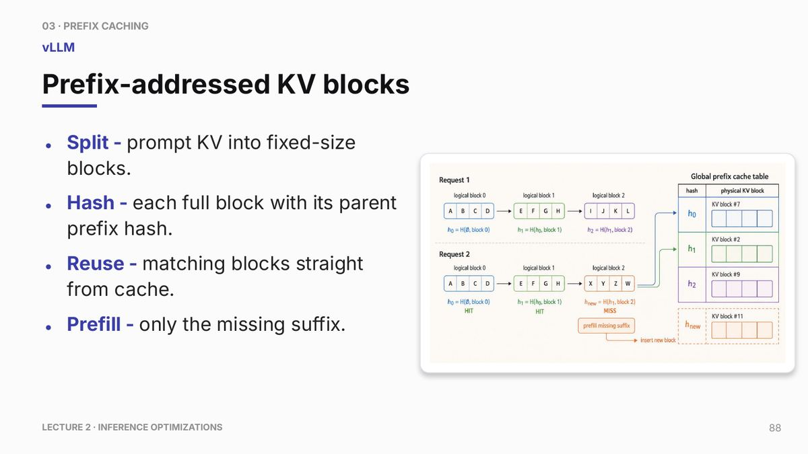
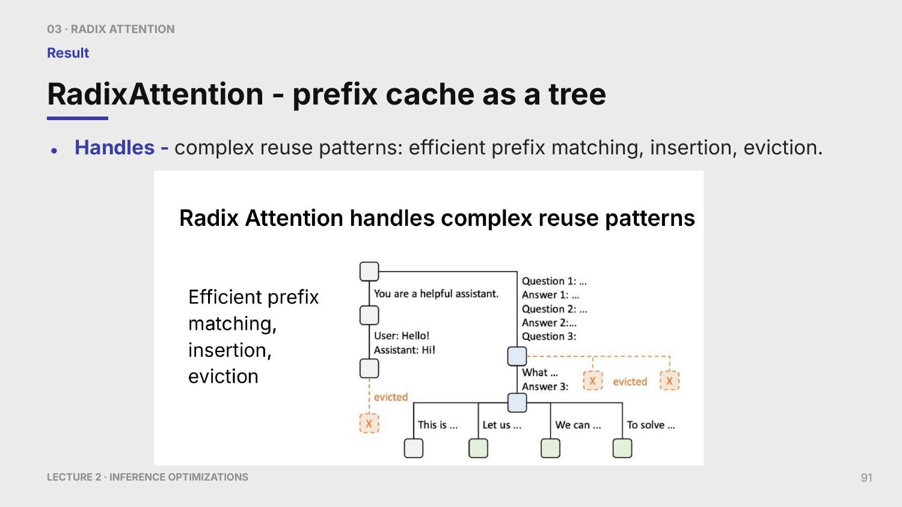
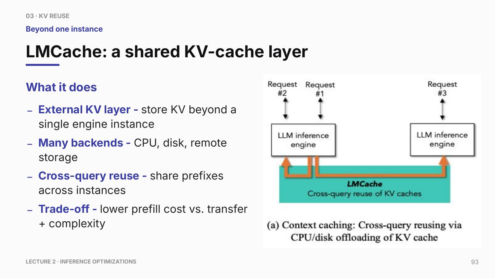
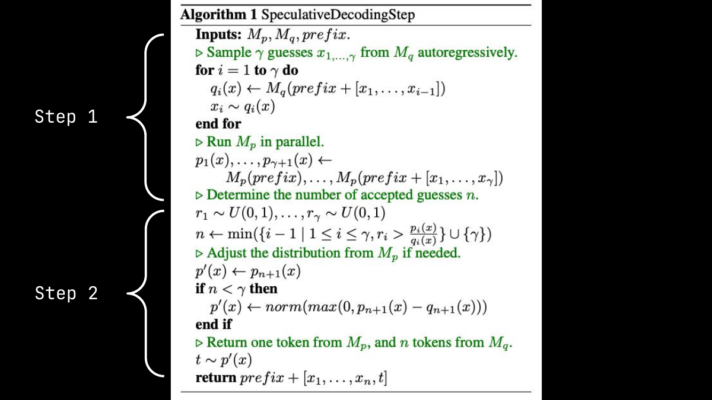
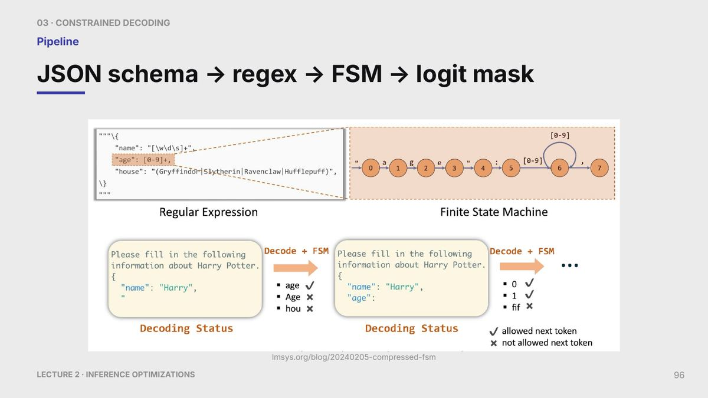

10 Serving Engines
Explain how a serving engine admits, batches, caches, and schedules requests, and how those choices trade throughput, latency, memory capacity, and fairness under a fixed workload.
One worker’s decode loop reads and extends KV-cache state. Production service adds many concurrent requests, so a serving engine must decide which requests enter memory, which ones advance together, and where their cache blocks remain. Inference engine is a broader deployment term that can include model runtimes, compilers, and hardware-specific executors. Here, serving engine means the request scheduler and memory manager around model execution.
These engine decisions operate above individual kernels, and this is where throughput and latency trade off explicitly. More aggressive batching can improve utilization but increases waiting. Prefix caching can skip work but needs exact token-prefix matches. Speculative decoding can reduce serial target-model steps but depends on how often the draft is accepted. The controls share the same memory and GPU time, so a serving configuration is evaluated as one operating point: the workload and quality target stay fixed, one control changes, and Time To First Token (TTFT), Time Per Output Token (TPOT), goodput, fairness, and capacity are compared with the service objective.
Production serving adds admission control, token-level scheduling, cache management, prefix reuse, and optional speculative verification around the model kernels.
![A serving timeline interleaves chunked prefill and decode across requests, with separate panels for admission, prefix reuse, speculative verification, and service-level feedback. Section labels identify chapter 10 section map: 10.1 - From model libraries to serving engines; 10.2 - Static batching and continuous batching; 10.3 - Chunked prefill; 10.4 - Separate prefill and decode workers; 10.5 - Prefix caching and radix-style reuse; 10.6 - Speculative decoding; 10.7 - Constrained decoding; 10.8 - Serving metrics and production traces; 10.9 - Serving stack selection.](../assets/fig-m4-c10-f01.png)
The timeline distinguishes wider prompt-prefill chunks from repeated decode steps. Prefix caching removes repeated prompt work only for execution-compatible prefixes. Speculative decoding advances by the verified accepted prefix, while rejected proposals still consume draft and verification work. Scheduler settings must be evaluated against latency objectives, throughput, and fairness together.
The levers this chapter develops, in the vocabulary of Section 1.6.1, are keep the hardware busy through batching, do less work through prefix caching, and cut fixed overhead by keeping scheduler work off the decode path. Speculative decoding trades draft and parallel verification work for fewer sequential target-model passes. It does not necessarily reduce total arithmetic.
10.1 From model libraries to serving engines
A model library constructs the tokenizer and model objects, interprets checkpoint configuration, loads weights, and exposes callable forward or generation interfaces. A serving engine uses those components inside a request-processing system that adds admission, shared scheduling, KV-cache block management, worker coordination, streaming, and service metrics.
The same checkpoint can therefore participate in different execution arrangements. Direct model-library calls are useful for controlled baselines and correctness checks. A serving engine adds the control plane needed when many requests compete for memory and GPU time, while still relying on model-library or compiled-runtime components for the model computation itself.
The two roles divide the work. Tokenizer, configuration, checkpoint, and model objects define what computation is executed. Admission, batching, KV-cache policy, worker backends, and streaming define how requests share the execution capacity.
The serving engine has a CPU-side control plane as well as a GPU execution path. The control plane receives API requests, formats inputs, tokenizes text, checks admission constraints, selects batches, allocates or looks up KV blocks, schedules prefill and decode work, and returns streamed tokens. If this scheduler is slow, the GPU can sit idle even when the model kernels are efficient. The following list names CPU-side control-plane responsibilities and the scheduler symptom they can create.
- API formatting: Parse request metadata, sampling settings, adapter selection, schema constraints, and streaming preferences.
- Tokenization: Convert text to token IDs. This is often CPU-side work and contributes to TTFT for short requests.
- Admission control: Decide whether the request can fit under memory, context-length, batch, and SLO constraints.
- KV block lookup/allocation: Find reusable prefix blocks, allocate new blocks, and maintain block tables for active sequences.
- Decode-step scheduling: The scheduler selects which active requests advance on the next GPU step and which prefill chunks can be interleaved.
- Scheduler contention: A state where CPU scheduling, tokenization, or block bookkeeping becomes slow enough that GPU kernels are separated by idle gaps.
vLLM is an open-source serving engine built around continuous batching and paged KV-cache management. Here paged KV-cache management means fixed-size logical KV blocks mapped to noncontiguous physical blocks, following Efficient Memory Management for Large Language Model Serving with PagedAttention1. Its scheduler architecture and multi-step GPU execution (Section 10.2.2) aim to move bookkeeping off the per-token hot path so the GPU receives fewer idle gaps.
vLLM groups its settings by the object they constrain. Memory and context settings bound cache growth and workspace reserve. Cache-representation settings select a supported KV format. Scheduler settings bound token and request admission. Model-loading settings, including --quantization, choose a weight-quantization backend supported by the selected release. Available backends and defaults are release-specific. Section 10.2.2 gives the scheduler-facing fields, their effects, and the documentation version used here.
A serving configuration is accepted only when admission, cache use, and kernel execution follow the intended path and request-level latency or goodput improves without violating quality or memory limits. Higher GPU utilization alone is not a substitute for the service metric.
These settings control admission and memory budgets. They do not repair a slow attention kernel or an inefficient compiled graph. The next section isolates the batching policy so its effect on request waiting and GPU occupancy can be measured separately.
10.2 Static batching and continuous batching
Batching is the scheduler decision to run multiple requests together so the GPU receives enough work. In autoregressive serving, batching is harder than in ordinary inference because requests generate different numbers of tokens and finish at different times.
- Static batching: Runs a fixed group of requests together until the batch completes.
- Dynamic batching: Briefly waits to collect a fuller launch batch, then runs the launched work mostly as a fixed unit.
- Continuous batching: Updates the active request set at each decode step, also called iteration-level scheduling.
The problem is generation waste. Autoregressive requests finish at different times, and a static batch remains limited by the longest request. Requests that finish early stop doing useful work but can still occupy scheduler and cache capacity until the batch drains. Continuous batching removes finished requests and admits new ones at token-step boundaries, keeping active work packed more tightly.
The next figure shows requests collected over a short dynamic-batching window and then launched as a fixed group. Like other request-scheduling timelines, it describes admission and waiting, not model accuracy or kernel throughput. Continuous batching differs because it can change the active group at token-step boundaries.

This improves admission and utilization, but the launched batch is still mostly fixed. It cannot reclaim finished decode slots every token the way continuous batching can.
The cost is scheduler and cache-management complexity. The engine must track which sequences are active, which KV blocks they own, which requests have completed, and which prefill or decode work can be inserted without violating latency targets.
| Dimension | Static batching | Continuous batching |
|---|---|---|
| Admission | Fixed group | Dynamic per step |
| Utilization | Wastes slots after requests finish | Keeps active work packed |
| Latency | Can wait for batch formation | Can reduce waiting but adds scheduler work |
| Cache management | Simpler | Requires dynamic block assignment |
10.2.1 Batching policies
Which requests can join a GPU step, and when can a released decode slot be refilled without worsening queue time or per-token latency? The three policies below answer that scheduling question differently.
Consider three requests that need 2, 5, and 8 decode steps. A static batch reserves the launched group until the eighth step, so the first two requests leave unused slots after they finish. Dynamic batching can wait briefly before launch to form that group, but it still cannot refill those slots during the run. Continuous batching checks the active set after each decode step: it removes completed requests, admits waiting ones whose KV state fits, and forms the next token-step batch. This recovers slots, but every refill requires scheduler work and KV-block bookkeeping, so the gain must be checked against queue time and TPOT.
10.2.2 CPU-side scheduler architecture and vLLM-style optimizations
A fast GPU worker can still underperform if the CPU control plane cannot feed it. The engine reduces idle gaps between decode steps by moving avoidable CPU work off the per-token hot path and by scheduling several GPU steps with less round-trip overhead. The examples below show common scheduler goals and the configuration mechanisms used to tune them.
- Separated API server: Keeps HTTP/gRPC parsing, authentication, request validation, and streaming protocol work away from the engine’s critical scheduling loop.
- Tokenization off the hot path: Moves CPU tokenization and deterministic request serialization before admission whenever possible, reducing TTFT variance for short prompts.
- Multi-step scheduling: Schedules several decode iterations ahead so the GPU worker can replay or advance work with fewer CPU scheduler round trips.
- Async output processing: Lets detokenization, sampling post-processing, and streaming callbacks proceed without blocking the next GPU decode step.
- Request formatting discipline: Normalizes sampling settings, adapters, constraints, and prompt fields once, rather than rebuilding them on every iteration.
max_num_batched_tokens: Scheduler-budget field that caps how many total prompt and decode tokens can enter one scheduling step.2max_num_seqs: Scheduler-budget field that limits the number of sequences in one iteration.--gpu-memory-utilization: Memory-budget flag controlling how aggressively the engine budgets GPU memory for weights, workspaces, and KV cache.--max-model-len: Context-length flag that constrains worst-case KV-cache growth.--kv-cache-dtype: Cache-precision flag, effective only when supported by the engine and kernels.--enable-prefix-caching: Prefix-cache flag enabling exact-prefix KV reuse when the engine can safely match cached prefixes.
The scheduling mechanisms can reduce idle gaps between useful GPU work without changing an individual model kernel. Memory, context, and cache settings also change capacity or the selected execution path, so their effects differ. A timeline can reveal shorter host-side scheduling regions, fewer CUDA launch gaps, and more regular decode-step cadence.
Token selection (Section 1.1) is also part of every decode step. For each active request, temperature divides logits by a positive scalar. Top-k selects the largest scores, while top-p selects a high-probability set reaching a cumulative probability threshold. The latter two can require selection or sorting over the vocabulary-sized vector, about 128,000 entries for Llama 33. Per-request settings and constraint masks (Section 10.7) can force separate work for each request. Engines can therefore run selection on the GPU for the whole batch at once. A selection step that returns to Python for each request adds a host round trip to every generated token.
Continuous batching is beneficial only when the extra scheduler and cache bookkeeping costs less than the capacity recovered from completed or stalled requests. Confirm that trade-off with request-level TTFT, TPOT, throughput, and queue-time distributions rather than GPU utilization alone.
10.2.3 Load, concurrency, and queueing
Batching and admission decide how many requests run at once, but the number that are present is set by the traffic. A request that waits longer stays in the system longer. Waiting before admission need not retain KV cache. Waiting after prefill can keep cache resident. Total request concurrency and cache-resident concurrency must therefore be measured separately. Little’s law states the relation for any stable system: the average number of requests in the system equals the average arrival rate times the average time each request spends there, \(L=\lambda W\).4 It holds whatever the arrival pattern or scheduling policy, as long as the averages are taken over the same long period.
Worked example: From arrival rate to KV-cache memory
Inputs: Requests arrive at \(\lambda=10\) per second and spend \(W=4\) seconds in the system on average, from arrival to completion. As an upper bound, assume each request present holds 2,560 tokens of KV cache (a 2,048-token prompt plus 512 generated tokens) at 131,072 bytes per token, the Llama 3 8B shape of Section 1.3.
Concurrency: \(L=10\times4=40\) requests are present on average, with a mean KV-payload upper estimate of \(40\times2{,}560\times131{,}072\approx13.4\) GB. Queued requests hold no cache yet, and a running request’s cache grows as it generates, so the average is lower. Adding 16 GB of weights leaves room in an 80 GB budget under this average-state estimate. It does not prove that peak cache use, workspaces, and allocator reserve fit.
Doubled traffic: At \(\lambda=20\) per second, suppose the extra load raises queueing so that \(W\) grows to 6 seconds. Then \(L=120\) requests are present on average, giving a mean-payload upper estimate of 40.3 GB. The upper estimate is three times larger. Actual cache use depends on admission and retained lengths.
Conclusion: Latency and memory are coupled through the number of requests in flight. If higher load increases cache-resident concurrency, cache pressure can trigger admission limits or preemption (Section 9.5), which lengthens waiting further. Capacity planning therefore fixes the arrival rate and the latency target together, then checks that the resulting concurrency fits in memory. Admission queues can instead grow without allocating more KV cache, so peak resident state must be checked separately from Little’s-law averages.
Waiting grows sharply as a server approaches full use. Requests arrive in bursts, and when the server is already busy, each new arrival joins a queue that takes time to drain. Near full utilization, a small increase in load produces a large increase in waiting. Serving systems therefore run below their maximum throughput to protect TTFT and TPOT targets. The measured operating point, the throughput reached while the latency target still holds, is the goodput of Section 10.8.
10.3 Chunked prefill
Chunked prefill: splits long prompt processing into smaller chunks so one long prompt does not monopolize the GPU. The technique follows Taming Throughput-Latency Tradeoff in LLM Inference with Sarathi-Serve5, which introduces chunked prefills with stall-free schedules that admit new work without pausing ongoing decodes. It improves fairness in mixed workloads and can reduce TTFT for short requests behind long prompts. For example, a large chunk from one 16k-token prompt can keep a short waiting request behind one long GPU interval, while smaller chunks let the scheduler admit that short request between portions of the long prefill. The smaller chunks trade lower blocking for more scheduling overhead because each chunk still pays scheduler and launch work. The chunk size is a control knob: too large increases blocking, too small increases overhead.
The mechanism is scheduling, not a new attention algorithm. A long prompt is broken into several prefill units that can be interleaved with decode work or shorter prompts. This gives the scheduler more opportunities to protect interactive latency.
Chunking changes when prompt work is scheduled, not how much attention work the prompt requires. Its success is therefore measured as a better latency and fairness trade-off under a mixed workload, with any change in total throughput reported separately.
10.4 Separate prefill and decode workers
Prefill and decode compete for the same GPU when they share a worker pool. A long, compute-heavy prefill can then delay the short decode steps that control streaming smoothness. Disaggregation sends the prompt to a prefill worker, which builds the initial KV cache, then transfers that cache plus compatible request state to a decode worker. This phase split follows Splitwise: Efficient Generative LLM Inference Using Phase Splitting6, which places compute-intensive prompt work and memory-intensive token generation on separate resources and pays explicit KV state transfer between them.
![Disaggregated prefill/decode separates prompt processing from token generation. A router sends the prompt to a prefill worker, transfers the resulting KV state, and then a decode worker generates tokens. The point is latency isolation, not free throughput. Request and control metadata reach both roles, KV state crosses the handoff boundary, decoded outputs return to the serving path, and model weights are commonly resident in both pools. The design helps only when isolation outweighs transfer and coordination cost.](../assets/fig-m4-c10-f03.jpg)
The decode pool can run steadier token steps, but the handoff adds routing, KV-transfer, and coordination delay. Use chunked prefill when scheduling within one pool protects decode latency. Separate the pools only when the measured reduction in decode interference is greater than the added handoff time. Evaluate duplicated model weights separately: they consume memory and hardware capacity in both pools and can make the design too costly or infeasible even when transfer latency is acceptable.
10.5 Prefix caching and radix-style reuse
Prefix caching: stores key-value blocks for token prefixes that recur across requests. Radix-style reuse organizes prefixes in a tree so shared prefixes can be found efficiently. The match must be at the token level, not merely string similarity, because the cache represents model-internal attention state.
- Prefix: The initial token sequence shared by one or more requests, such as a system prompt, tool instruction block, retrieval wrapper, or few-shot example.
- Cache hit: A new request starts with a token prefix whose KV blocks are already stored and valid for the same model, tokenizer, adapter, and relevant execution assumptions.
- Radix tree: A tree-like index where common token-prefix paths are shared, allowing the engine to find the longest reusable prefix efficiently.
- Invalidation: The cache entry must not be reused if model weights, adapter state, tokenizer output, positional assumptions, cache format, or prefix tokens differ in a way that changes the stored internal state. Sampling settings matter only when they change the prefix tokens or another state-producing input.
The bottleneck is repeated prefill work. Many workloads reuse the same system prompt, tool instructions, retrieval wrapper, or few-shot examples. If the engine can prove that a new request starts with the same token prefix under the same model and adapter assumptions, it can reuse the stored KV state and skip part of prefill.
Prefix caching mainly improves TTFT and prefill throughput for repeated-prefix workloads. It does not accelerate unrelated prompts, and it does not reduce the cost of generating new tokens after the shared prefix unless those later tokens also become reusable cached state.
The visual separates the logical token prefix from the physical KV blocks that store the reusable attention state.

The cache key must match tokenized prefixes and model/cache assumptions. Reuse is powerful for repeated system prompts but fragile if tokenization, adapters, or decoding context differs.
10.5.1 Prefix cache internals and operating policy
Prefix caching is exact reuse of previously computed KV state. The engine can skip prefill work when the model, tokenizer, adapter state, decoding assumptions, and token prefix match the cached state. The cache key therefore combines token identity with compatible model execution state.
The following sections move from exact block hashing to tree reuse (Section 10.5.2) and external KV storage (Section 10.5.3). Exact token-prefix matching remains necessary even when the cache reaches beyond one worker.
- Prefix-addressed KV blocks: The cache stores complete KV blocks for token prefixes and maps future requests to those blocks when the prefix matches exactly.
- Block hashing: A block key is computed from the tokens in a complete block plus identity information such as model, adapter, and relevant cache metadata.
- Parent-prefix hash: The hash of previous complete blocks is included so identical token blocks in different prefix positions are not confused.
- Complete-block reuse: Most block-based systems reuse only complete blocks. A partial last block may not be reusable until it is filled.
- Per-block LRU: Least-recently-used eviction can free blocks under memory pressure, but it may evict shared trunks that many future requests would have reused.
- Cache-blind scheduling: Routes requests without considering existing prefix state. Simpler but can miss expensive reuse opportunities.
- Cache-aware routing: Routes requests toward replicas or workers that already hold useful prefix blocks. Improves reuse but adds routing state and load-balancing complexity.
Operationally, a cache-friendly prompt places stable content first: system prompts, tool descriptions, policy text, and reusable retrieval context precede dynamic user-specific fields when the product permits it. Timestamps, random IDs, request-specific metadata, and volatile instructions appear later. Deterministic serialization and prefix-cache hit-rate monitoring expose invisible formatting changes that can turn a high-reuse workload into a cache-miss workload.
Cached-input economics are a direct consequence of avoided prefill. If a provider or internal accounting model discounts cached input tokens, the discount is only justified when the serving path actually reuses KV work rather than recomputing the prefix.
10.5.2 RadixAttention and SGLang-style reuse
A radix tree stores a shared token prefix once as a trunk and attaches each different continuation as a branch. This reuse follows SGLang: Efficient Execution of Structured Language Model Programs7, which introduces RadixAttention for KV cache reuse across structured program calls. When a request arrives, the engine follows matching token spans to find the longest execution-compatible prefix, reuses the KV state on that path only when token IDs and model execution assumptions match exactly, and inserts only the new suffix.

This layout is useful when chat sessions, retrieval flows, or language-model programs repeatedly fork from the same prompt. The engine must still decide which cold branches to evict and whether routing a request toward a worker with a hot trunk is worth extra load-balancing complexity.
Block-hashing systems such as vLLM-style prefix caching are simple and effective for exact complete-block reuse. RadixAttention-style systems expose more sequence structure, which helps branchy agents, chat sessions with common trunks, retrieval-augmented generation (RAG), and structured LM programs. The cost is more complex cache metadata and scheduler logic.
10.5.3 LMCache and external KV layers
An external KV layer is a cache tier outside one GPU worker’s HBM. It reuses or preserves expensive prefill results across requests, replicas, or time windows when that worker’s GPU memory is too small or the cached state would otherwise be short-lived.
An external KV cache moves prefix reuse beyond one engine instance. Instead of storing all reusable KV state only in one GPU worker’s HBM, the system can spill or share KV blocks through CPU memory, disk, or a remote storage service.
LMCache is a concrete example of this external-KV-cache layer. The general concept is the storage tier and lookup policy. LMCache is one implementation example used to make that layer visible, following LMCache: An Efficient KV Cache Layer for Enterprise-Scale LLM Inference8, which extracts KV cache from paged engines such as vLLM and SGLang and shares it across queries and engines through CPU, disk, and network tiers.
External KV-cache layers extend prefix reuse beyond one engine process, turning cache reuse into a distributed serving problem.

CPU memory, disk, and remote stores are alternative capacity tiers outside a worker’s HBM. Reads and writes cross the worker/cache boundary, and reuse is valid only for matching model, tokenizer, adapter, cache format, and other state-producing assumptions.
- CPU backend: Higher capacity than HBM and lower latency than disk, but transfer through PCIe or NVLink-C2C-like paths must be amortized.
- Disk or SSD backend: Useful for persistence or very large reuse windows, but too slow for a tight per-token path unless transfers are large and preplanned.
- Remote backend: Can share reuse across replicas, but network transfer and routing decisions can erase the saved prefill cost.
- Invalidation: Cache entries must be tied to model version, tokenizer, adapter, precision, and relevant runtime assumptions.
- Best fit: Long stable prefixes, repeated prompts, multi-replica serving, or workloads where prefill cost dominates transfer cost.
The decision rule is simple: external KV reuse helps only if avoided prefill time exceeds lookup, transfer, placement, and complexity costs. If the network path is slower than recomputing the prefix locally, the external cache becomes a liability.
The exact-match requirement is stricter than natural-language similarity. The cache stores internal layer state for a token sequence, so the reusable boundary is the longest prefix whose token IDs and state-producing assumptions match exactly.
Cache validity follows this order before a prefix is reused. The first mismatch ends the reusable prefix and invalidates its later suffix:
Checklist: Prefix-cache validity
- Token IDs: The KV state comes from the token sequence after tokenization. A token-ID mismatch invalidates that position and every later suffix.
- Tokenizer and chat template: Formatting changes can produce different token IDs even when the text looks similar. The comparison uses retokenized IDs rather than raw strings.
- Model weights and adapter state: LoRA adapters, fine-tuned weights, and model revisions change hidden states. Cache entries belong to one model and adapter identity.
- Position and attention assumptions: RoPE scaling, sliding windows, block layout, and cache dtype affect how stored state is interpreted. Reuse requires compatible execution states.
- Mutable system or retrieval context: A retrieval snippet or tool instruction can change across requests. The reusable boundary ends at the first changed token.
Prefix reuse is profitable only when avoided prefill work exceeds lookup, transfer, invalidation, and placement costs across the full cache hierarchy. The next question is whether reducing serial target-model work can improve decode when useful prefixes are unavailable.
10.6 Speculative decoding
Speculative decoding: uses a cheaper draft method to propose several tokens and the target model to verify them. The method follows Fast Inference from Transformers via Speculative Decoding9, which proposes candidates with an approximation model and verifies them in parallel with the target model without changing the output distribution. The draft method accelerates proposal, but the output is exact only when the acceptance and residual rules preserve the target distribution.
The problem is serial target-model decoding. A normal autoregressive loop asks the large target model for one token at a time. Speculative decoding tries to advance several tokens per target-model verification pass by first generating a candidate suffix with a cheaper draft model.
10.6.1 Draft and verify mechanism
The mechanism has four ordered stages: draft a candidate suffix, verify its probabilities with the target model, accept the longest valid prefix, and repair the state after the first rejection. The equations and diagram below define those stages before implementation choices are considered.
The algorithm view separates proposal from verification so the target model remains responsible for correctness.

The serving dataflow is: draft several candidate tokens, verify them with the target model, accept the longest valid prefix, and continue generation from the accepted state.
Let p(x) and q(x) be normalized target and draft next-token distributions over the same vocabulary, conditioned on the same token prefix and incorporating the chosen sampling settings. The draft model samples a short candidate suffix cheaply. The target model evaluates that suffix in a larger verification pass. Each proposed token is accepted with a rule based on how much the draft distribution overstated or understated that token relative to the target distribution. If a token is rejected, the algorithm samples a replacement from a fallback distribution derived from the target and draft distributions, then discards the unaccepted suffix.
Definition - Speculative decoding
Draft model: A cheaper model proposes multiple candidate tokens using distribution q(x).
Target model: The larger model verifies the draft suffix using distribution p(x) and preserves target-model correctness.
Acceptance rule: Accept a proposed token with probability min(1, p(x) / q(x)) under the standard speculative-sampling formulation.
Fallback sampling: When a token is rejected, sample from the corrected residual distribution instead of committing the rejected draft suffix.
Last-token sampling: After all proposed tokens are accepted, sample one additional token from the target model’s distribution so the method can advance beyond the draft suffix.
Speedup condition: Draft cost, verification cost, acceptance rate, and KV-cache handling must combine favorably.
Failure mode: A low-acceptance or expensive draft model can erase the speedup.
One word, two meanings: residual
Residual connection: the addition that carries a sub-layer’s input forward alongside its output, so the sub-layer only has to produce the difference (Section 1.1). It is part of the model’s architecture.
Residual distribution: what is left of the target distribution p after the draft distribution q is subtracted, with negative values set to zero and the result renormalized. It is the distribution a rejected token is resampled from, and it is what keeps the output exact.
The shared word means the remaining part in both cases, but the two refer to different objects: one is a tensor addition inside the model, and the other is a probability correction in the sampling algorithm.
The useful observations are accepted-prefix lengths, committed output-token counts, and elapsed time. The first records how much of each draft survives. The other two show whether draft work, verification, and cache handling reduce time per output token. A fixed sample from the expected text domain, such as a FineWeb-like public-web sample, controls the prompt distribution. Section 11.2.10 shows how to report these observations without treating a prefix length as the theoretical acceptance probability.
Speculative decoding helps when the target model is much slower than the draft model, acceptance is high, and verification can run efficiently as a batch. It is weak when the draft is inaccurate, the target model is already well utilized, verification cannot use the available hardware efficiently, or rollback/cache overhead dominates.
The formal mathematical formulation of speculative decoding rejection sampling (from Fast Inference from Transformers via Speculative Decoding10) guarantees that the output distribution is identical to the target model’s output distribution when the standard acceptance and residual rules are used:
\[ \text{Acceptance Probability} = \min\left(1, \frac{p(x)}{q(x)}\right) \tag{10.1}\]
When a draft token x is rejected, a corrected token is sampled from the residual distribution:
\[ p'(x) = \frac{\max(0, p(x) - q(x))}{\sum_{y} \max(0, p(y) - q(y))} \tag{10.2}\]
For one position, a token x is proposed with probability q(x). Multiplying by its acceptance probability gives accepted output mass min(p(x), q(x)). Tokens with q(x) = 0 cannot be proposed. Let R be the rejection probability, 1 minus the sum of those accepted masses over the vocabulary. Since p sums to one, R is also the sum of max(p(x) - q(x), 0). When R > 0, rejection followed by residual sampling contributes R times p’(x) = max(p(x) - q(x), 0). Adding accepted and corrected mass gives p(x) for each token. If R = 0, p and q coincide and rejection cannot occur in exact arithmetic, so residual normalization is unnecessary.
Worked example: Where rejected probability goes
For an illustrative vocabulary (A, B, C), take p = (0.6, 0.3, 0.1) and q = (0.2, 0.5, 0.3) at one fixed prefix. The acceptance probabilities are (1, 0.6, 1/3). Multiplying each by its proposal probability gives accepted masses (0.2, 0.3, 0.1), totaling 0.6. Thus rejection occurs with probability 0.4.
The missing target mass is max(p - q, 0) = (0.4, 0, 0). Dividing by 0.4 gives residual probabilities (1, 0, 0): every rejection supplies A. The final output masses are (0.2, 0.3, 0.1) + 0.4 times (1, 0, 0) = (0.6, 0.3, 0.1), exactly p. Sampling ordinary p after rejection would instead produce (0.44, 0.42, 0.14), changing the target distribution.
This calculation explains the correction rule across repeated samples, not a requirement that a particular draft token equal the target’s most likely token. Applying the same rule at each retained prefix preserves the next-token distribution at every step. After the first rejection, later proposals have the wrong conditioning prefix and are discarded. If all proposals survive, the extra token is sampled directly from the target after that suffix.
A simple sequential cost model relates expected progress to the draft acceptance rate alpha, candidate length gamma, and draft-to-target cost ratio c. It assumes a constant independent acceptance probability, gamma sequential draft steps, and one target verification whose cost is approximated by one ordinary target step. Under those assumptions, the expected number of committed tokens per target verification is:
\[ \text{Expected Tokens} = \frac{1 - \alpha^{\gamma + 1}}{1 - \alpha} \tag{10.3}\]
The walltime speedup factor (relative to vanilla target model decoding) is calculated as:
\[ \text{Speedup} = \frac{1 - \alpha^{\gamma + 1}}{(1 - \alpha)(\gamma c + 1)} \tag{10.4}\]
Here c = time(M_q) / time(M_p) is the execution-time ratio of one draft step to one target step. As alpha approaches 1, the expected advance approaches gamma + 1 tokens. Real systems can deviate from this estimate because target verification cost changes with batch shape, cache repair is not free, and requests do not share one constant acceptance probability.
Worked calculation - speculative decoding
Illustrative assumptions: Take gamma = 4 draft tokens, theoretical alpha = 0.8, and c = 0.2 draft-to-target cost ratio. These are assumed inputs to the cost model, not benchmark measurements. The draft model proposes tokens. The target model verifies them and supplies retained probabilities.
Expected advance: (1 - 0.8^5) / (1 - 0.8) = 3.36 tokens per target verification. This includes the final target or residual-sampled token, not only accepted draft tokens.
Estimated speedup: 3.36 / (4 x 0.2 + 1) = 1.87x before rollback, scheduler overhead, cache maintenance, and batch-shape effects.
Acceptance examples: For p(x) = 0.10 and q(x) = 0.25, acceptance probability is 0.4. For p(x) = 0.30 and q(x) = 0.20, it is 1.
Validation: Compare the estimate with wall-clock target verification, draft work, rollback, and serving-scheduler time on the same prompt distribution.
A lenience parameter can relax strict acceptance in some research settings and trade exactness for a quality/speed experiment.
The exact acceptance rule preserves the target distribution, but speed depends on accepted progress relative to draft, verification, rollback, and cache-maintenance cost. The next question is which draft design and candidate length minimize measured end-to-end latency for the actual prompt classes.
10.6.2 Implementation choices and measurement
The speculative-decoding experiments in this guide use two roles: a target model that defines the desired distribution and a draft or approximation model that proposes tokens. The speculative prefix length gamma is the number of proposed tokens verified in one target pass. The theoretical alpha is the mean conditional probability that a draft proposal is accepted at a prefix, under the independence assumptions used in the cost model. A mean retained-prefix length, even divided by gamma, is not that parameter: positions after the first rejection do not belong to the committed continuation. The cost coefficient c is the draft-step cost divided by the target-step cost.
The acceptance rule, the residual correction, and the exactness guarantee are defined in Section 10.6. Three implementation choices remain:
- Parallel verification: The target model evaluates the drafted suffix in one larger forward pass instead of one target pass per drafted token.
- Lenience: A relaxation that can improve speed by accepting more tokens, but it no longer has the same exact-distribution guarantee and must be evaluated as a quality/speed trade-off.
- N-gram or context-copy draft: A near-zero-cost approximator that proposes tokens from repeated recent context rather than a separate neural draft model. It is attractive when text has strong repetition and model loading a second draft is too expensive.
An example experiment pairs a larger target model with a smaller draft model, tokenizes a FineWeb-like public-web evaluation sample, colors proposed tokens by accepted or rejected status, and reports mean accepted-prefix length plus committed tokens per measured wall time. The text sample defines the workload. Token coloring shows whether speedup comes from long accepted runs or occasional accepted proposals.
Speculative decoding helps when the draft is cheap, aligned with the target, and verification batches efficiently. It is weak when the target model is already saturated by a large batch, when the draft is inaccurate for the domain, when gamma is too large for the acceptance rate, or when KV-cache rollback and CPU sampling overhead dominate.
Accepted-prefix lengths show how far verification advances through each proposal. The table describes qualitative acceptance regimes, not an estimator of alpha from those lengths. Any engine-reported acceptance rate needs its own numerator, denominator, and treatment of positions after the first rejection. Draft cost, target batch efficiency, rollback cost, and serving-scheduler pressure determine whether that progress saves time.
| Acceptance-rate range | What it means | Likely speed result | What to do |
|---|---|---|---|
| High | Most drafted tokens survive target verification | Speculation can reduce target-model passes if the draft is cheap and verification is batched well | Increase candidate length carefully until rollback or verification cost grows |
| Medium | Some runs are accepted but rejections are frequent | Speedup is workload-dependent and may vary by prompt domain | Measure by prompt class; tune candidate length, draft model, and batching policy |
| Low | Draft proposals rarely match the target distribution | Extra draft work and rollback can make decoding slower | Use a better draft, reduce candidate length, or disable speculation for that traffic class |
| High acceptance but no speedup | The target path is already saturated or overhead moved elsewhere | Wall time stays flat despite good token acceptance | Inspect GPU timeline, scheduler gaps, KV rollback, and CPU sampling work |
The acceptance rate is therefore diagnostic rather than sufficient. A deployment should keep speculation only when the combined draft, verification, correction, cache, and scheduler path improves the end-to-end metric for the relevant prompt classes.
10.7 Constrained decoding
Constrained decoding: restricts output to a structured language, such as a JSON schema, grammar, regular expression, or finite set of choices. It belongs to the serving-engine or decoder layer between model logits and token selection. The reliability benefit is valid structured output. The performance cost is maintaining one constraint state and valid-token mask per active request.
In the finite-state design shown below, a state records progress through the permitted character sequence. A transition consumes a character along a labeled edge to another state. The current state determines which continuations remain possible. Some states also permit completion of the whole constrained output.
The illustrated path from JSON schema to regular expression, finite-state machine, and logit mask represents one compiled-constraint design, following Efficient Guided Generation for Large Language Models11. A regular expression or finite choice set can use finite-state machinery directly with a vocabulary index over valid continuations. Nested JSON or general grammar constraints may instead need parser or grammar-stack state beyond finite-state scope. In each case, a constraint compiler produces runtime state that identifies which next-token byte sequences remain valid.
At every decode step, the constraint runtime keeps the current parser state, derives legal next terminals or byte prefixes, maps those possibilities to tokenizer IDs, masks invalid logits, samples or selects one remaining token, and advances the parser state with that token. Tokenization matters because one vocabulary token can contain several characters or a partial structural sequence. Validity cannot be implemented as a simple one-character lookup.
The pipeline view places the constraint state between logits and token selection.

The constraint system masks invalid tokens before sampling or selection. It improves validity but can add CPU-side work, scheduler work, or smaller effective token sets.
Definition - Constrained decoding
Constraint source: Schema, grammar, regular expression, finite-state machine, enum, or another validity rule.
Constraint state: The current parser, automaton, or grammar-stack state after consuming the generated token prefix.
Valid-token mask: A vocabulary-sized allow or deny mask derived from that state before sampling or greedy selection.
Benefit: Higher structured-output reliability.
Cost: Constraint compilation, parser-state updates, token-to-grammar matching, mask construction, and possible batch fragmentation.
Worked example: The age-field token walk
In the existing figure, the opening quote has already been consumed when the age-field machine reaches state 0. For a vocabulary token whose decoded text is age, the runtime checks all three edges: a takes 0 to 1, g takes 1 to 2, and e takes 2 to 3. The token is allowed and its ending state is 3. Age and hou fail at their first character. A token beginning legally but containing a later illegal character must also be masked.
The runtime tests candidates from the same current state without committing their trial transitions. It sets each valid token ID’s mask entry to allowed, masks the others before selection, and updates the request’s state only for the selected token. Selecting age therefore commits state 3, where the next character must be the closing quote.
After the quote and colon, state 5 requires a digit. A digit moves to 6, more digits loop at 6, and the comma moves to 7 to continue the surrounding object. This still-valid prefix is not a completed JSON document. The end-of-sequence token (EOS) is allowed only when the full constraint permits termination, after the remaining fields and closing syntax. Ending at a length limit before that point produces incomplete output, not valid completion.
The schema can be compiled before requests arrive, and an engine may reuse token masks for repeated states. Each request still needs its own current state. The mask-build time, state-update time, constrained TPOT, and completion validity reveal the runtime cost of that work.
The practical question is whether validity is worth its decode overhead for the traffic class. Group requests with the same constraint when the engine supports it, precompile stable schemas, and measure constrained Time Per Output Token (TPOT) separately from unconstrained decode. Schema enforcement checks JSON structure. Application validation checks the business rules.
10.8 Serving metrics and production traces
An observability stack is the production measurement layer around the serving engine. The engine exposes metrics from its scheduler, request queue, token loop, cache manager, and GPU worker processes. A metrics collector stores those time series, and a dashboard turns them into views an operator can inspect during incidents or capacity planning.
Prometheus is commonly used as the metrics collector: it scrapes HTTP endpoints exported by services and stores numeric time series. Grafana is commonly used as the dashboard layer: it queries Prometheus and displays latency, throughput, queueing, cache, and utilization trends. These tools do not optimize inference by themselves. They make the effects of scheduling and cache policy visible. A dashboard’s GPU-utilization panel usually shows the fraction of time a kernel is running, not how much of the GPU’s arithmetic is used (Section 5.1), so a busy decode fleet can show nearly 100 percent while it is memory-bound.
Chapter 8 defines the request-timing conventions for TTFT, inter-token latency, TPOT, end-to-end latency, throughput, and goodput. This section reuses those measures to locate a production symptom. The measures do not prove one cause by themselves, because queueing, kernels, memory, scheduling, and communication can affect the same latency measurement.
- Time To First Token (TTFT): Measures elapsed time until the first generated token. High TTFT can come from queueing, tokenization, prefix-cache misses, prefill work, communication, or cold setup. Use traces to separate them.
- Time Per Output Token (TPOT): Measures average decode time per generated token under the stated convention. Spikes can come from memory traffic, launch gaps, scheduler work, preemption, communication, or competing prefill.
- Queue Time: Measures the time requests spend waiting in the scheduler before admission. Useful for tracking utilization against SLO compliance.
- KV Cache Utilization: Tracks occupied cache blocks or bytes under the engine’s definition. High use may reflect useful admission or inefficient retention. Approaching the configured limit can cause waiting, eviction, recomputation, or preemption depending on policy.
A service comparison also needs a request-arrival contract. With open-loop load, request times are fixed independently of replies, so a slow service can build a queue. With closed-loop load, each client waits for its reply before submitting again, so a slower response also lowers the offered request rate. These policies test different operating points even when prompt lengths match.
Worked example: A fixed request-load comparison
This illustrative trace compares baseline and candidate serving settings in inference mode with the same loaded model, tokenizer, hardware, prompt IDs, output rules, and correctness check. It is an experiment design with invented timestamps, not a measured benchmark.
The saved request sequence contains R1 through R5 in that order, with exact prompt texts (Return only the digit 1., Return only the digit 2., Return only the digit 1., Return only the digit 2., Return only the digit 1.). The same pinned tokenizer and chat template produce each request’s token IDs and lengths, which are saved before either run. Each request asks for at most eight output tokens with greedy selection and the same EOS policy. Correctness means the stripped returned text equals the requested digit. The generator submits the requests at 0, 1, 2, 3, and 4 seconds without waiting for responses. It permits five outstanding requests, enough to submit this whole trace even if none finishes. If the generator misses a scheduled arrival, the run is invalid for this comparison. Actual submission times are recorded alongside scheduled times.
Compilation and allocator warmup finish before time zero. Each run then starts with an empty reusable prefix cache and no active requests. Warmup cache entries are cleared and that empty state is checked. Reuse within the five-request trace is allowed. The same policy applies to both settings. A separate warm-cache experiment would need the same saved priming requests before both runs.
The observation window is [0, 10] seconds on the load generator’s monotonic clock. Arrival means client submission. First token and completion mean receipt by that same client, so the measurements include transport. There are no retries. Rejected requests and requests still unfinished at 10 seconds remain in the outcome counts. Unfinished requests are canceled after the window and the engine is drained before the next run.
Suppose R1 has TTFT 0.2 seconds and completes at 1 second, R2 has TTFT 0.4 seconds and completes at 2.5 seconds, R3 is rejected, R4 has TTFT 0.8 seconds and completes at 6 seconds, and R5 is unfinished at 10 seconds. The predeclared objective requires a correct completed response, TTFT at most 0.5 seconds, and end-to-end latency at most 2 seconds. Assume the three completed outputs pass the fixed correctness check.
R1 and R2 meet the objective: their end-to-end times are 1 - 0 = 1 and 2.5 - 1 = 1.5 seconds. R4 takes 6 - 3 = 3 seconds and also misses the TTFT limit. The totals are five submitted, three completed, one rejected, and one unfinished. Completed-request throughput is 3 / 10 = 0.3 requests/s. Goodput is 2 / 10 = 0.2 requests/s, with two of five submitted requests meeting the objective. Rejected and unfinished requests contribute no successful work. Completed-request latency statistics retain R4 and report their three-request sample size, alongside the other outcome counts.
The same trace and ten-second window apply to the candidate. Changing only the serving setting makes differences interpretable. Repeated runs and a longer representative trace are needed for reliable tail estimates. Five requests demonstrate the accounting, not p95 or p99 performance.
The service-level measure that operators and product owners share is cost per generated token. It follows from the same quantities: the hourly cost of the GPUs divided by the tokens they deliver per hour at the latency target.
Worked example: Cost per million tokens
Inputs: One GPU costs an illustrative $3 per hour and sustains 2,000 generated tokens per second while the latency target holds.
Calculation: One hour delivers \(2{,}000\times3{,}600=7.2\) million tokens, so the cost is \(3/7.2\approx\$0.42\) per million tokens. If only 1,200 tokens per second meet the latency target, because pushing throughput higher breaks TPOT, the goodput-based cost is \(3/(1{,}200\times3{,}600/10^6)\approx\$0.69\) per million tokens.
Conclusion: Cost per token uses goodput, not peak throughput. Every lever that raises the tokens served within the SLO, such as batching, compression (Section 8.7), prefix caching, or speculative decoding, lowers this GPU cost per token by the same factor only if hourly GPU cost stays fixed. Additional draft-model devices, extra workers, or other serving costs must be included when they change.
A practical serving dashboard should group metrics by the subsystem that owns the symptom. The panel below is illustrative: it names the signals an operator would want when deciding whether the bottleneck is prefill, decode, KV memory, speculative execution, or the CPU control plane.
| Panel group | Example signals | Question it answers |
|---|---|---|
| Latency | TTFT p50/p95/p99, TPOT p50/p95/p99, inter-token latency, end-to-end latency | Which user-facing latency path is failing? |
| Scheduler | Queue time, admitted sequences, running sequences, prefill/decode batch sizes, max batched tokens | Is the CPU control plane or admission policy starving the GPU or over-batching requests? |
| KV cache | Cache used/free blocks, evictions, preemptions, prefix-cache hit rate, cache migration count | Is serving capacity limited by cache memory or by reuse/locality mistakes? |
| Speculation | Draft tokens proposed, mean accepted-prefix length, committed output tokens, measured wall time, rollback count, draft/target time | Is speculative decoding actually reducing target-model work? |
| GPU and communication | GPU utilization, HBM bandwidth, kernel gaps, NCCL time for sharded groups | Is the hot path local compute, memory bandwidth, launch overhead, or distributed communication? |
A dashboard identifies when and where a service-level symptom occurs, but it does not prove the lower-level cause. Use the relevant request trace, GPU timeline, memory measurement, or distributed trace to test the hypothesis before changing a kernel, scheduler, cache policy, or network layout.
10.9 Serving stack selection
Serving stacks differ in what they optimize and how much control they expose. Choose a serving stack by model support, hardware target, batching policy, cache strategy, build workflow, observability, and deployment needs. The examples below include GPU serving and local CPU/GPU stacks. Custom inference silicon, such as Groq, Cerebras, SambaNova, Etched, or Taalas systems, changes the hardware and compiler base itself. For those systems, model support, memory capacity, interconnect, compiler maturity, and production lock-in become the selection constraints.
10.9.1 vLLM and SGLang
vLLM and SGLang are serving engines: they control request admission, batching, KV-cache policy, and the generation loop. Their strongest fit depends on workload structure and reuse.
- vLLM: Flexible high-throughput serving engine built around PagedAttention-style KV-cache management12, continuous batching, broad model support, and practical operator controls.
- SGLang: Serving and programming stack for structured language-model programs, agentic workloads, branching, and RadixAttention-style prefix reuse13.
vLLM and SGLang are strongest when scheduler and cache policy are the main controls, but their fit still depends on model support and observed traffic structure. The next question is whether a more compiled or packaged stack can trade flexibility for better execution on a fixed hardware and shape range.
10.9.2 TensorRT-LLM and Triton Inference Server/NIM
NVIDIA inference stacks have release-specific model, hardware, and packaging requirements. Their benefits can come from optimized execution, deployment integration, or less setup work. Older compiled-engine releases also require managing engine files. Evaluate the execution engine separately from the endpoint layer.
- TensorRT-LLM: NVIDIA-optimized inference stack for supported hardware and model families. Current documentation describes PyTorch-native execution and removal of the older TensorRT engine backend. Older releases use compiled-engine files and an engine-build workflow. Check the installed release’s runtime, model, and shape support before choosing a preparation or deployment path14.
- Triton Inference Server: Production serving layer for HTTP/gRPC endpoints, model repositories, versioning, metrics, and ensemble deployment. Transformer execution is supplied by the configured model backend, while Triton owns the endpoint and deployment layer.
- NVIDIA NIM: Packaged NVIDIA inference microservice approach that trades lower integration work for stronger packaging, version, and hardware assumptions.
One name, two products: Triton
Triton the language: the Python-based language and compiler for writing GPU kernels used in Chapter 4 (Section 4.2). It produces one kernel.
Triton Inference Server: the NVIDIA serving layer described above. It produces an endpoint, and the kernels come from whichever backend it is configured with.
The two come from different projects and solve different problems. A deployment can use either, both, or neither.
Compiled and packaged stacks can reduce execution or integration cost only within their supported model, shape, version, and hardware range. The next question is whether the deployment values local operation, compact formats, and portability more than fleet-scale GPU throughput.
10.9.3 Local and CPU-oriented serving
Local and hardware-constrained stacks emphasize compact model formats, portability, and simple model management. Their objectives differ from a multi-GPU serving engine optimized for high fleet throughput.
- llama.cpp and GGUF: Local-first CPU/GPU/edge inference ecosystem with compact quantized formats. It serves local and hardware-constrained deployment, while high-throughput GPU fleets require a separately tuned serving engine and scheduler.
- Ollama: Local model-management layer that commonly sits on top of llama.cpp-style execution. It optimizes local usability more than cluster-scale scheduling.
The table connects a workload and an operating constraint to the stack that is most useful to evaluate first. Measure the actual prompt lengths, output lengths, prefix reuse, adapters, and hardware on the intended deployment path before choosing the stack.
| Workload or constraint | Most relevant stack to evaluate | Why it fits or what to test |
|---|---|---|
| Dense GPU serving with mixed request lengths, broad model support, and many adapters | vLLM | Continuous batching and KV-cache block management target high token throughput; test scheduler overhead and cache capacity under the actual traffic mix |
| Branchy agents, retrieval flows, structured programs, or heavily shared prompt trees | SGLang | Its programming model and RadixAttention-style reuse target structured control flow and prefix sharing; test reuse rate and constraint overhead |
| Supported NVIDIA model and hardware with stable shapes and a release-matched runtime or engine-build workflow | TensorRT-LLM | Distinguish the current PyTorch runtime from older compiled-engine releases; test preparation time, dimension coverage, and deployment update cost |
| Production endpoints with model repositories, versioning, or multi-model operations | Triton Inference Server or NVIDIA NIM | Deployment controls, metrics, and lifecycle management can determine the fit; test the execution backend as well as the endpoint layer |
| Local, offline, privacy-sensitive, or hardware-constrained deployment | llama.cpp/GGUF or Ollama | Compact quantized models and local model management reduce deployment footprint; test quality, memory capacity, and interactive latency on the target device |
The main trade-offs are flexibility, model coverage, hardware lock-in, build or compilation cost, production readiness, and whether latency or throughput is the primary target. Test the actual mix of prompt lengths, model changes, adapters, and branchy agent programs instead of relying on one fixed-dimension benchmark.
A serving-engine setting is still only a proposed explanation until it is tested under a fixed workload. Chapter 11 turns scheduler, cache, compiler, kernel, and communication changes into controlled experiments with warmup, synchronized timing, correctness checks, and repeatable reports.
Kwon, W., Li, Z., Zhuang, S., Sheng, Y., Zheng, L., Yu, C. H., Gonzalez, J. E., Zhang, H., & Stoica, I. (2023). Efficient Memory Management for Large Language Model Serving with PagedAttention. In Proceedings of the 28th Symposium on Operating Systems Principles (SOSP 2023), preprint at https://arxiv.org/abs/2309.06180 (DOI), v1 submitted 2023-09-12. Supports PagedAttention paging of KV cache into fixed-size blocks inspired by virtual memory, near-zero waste claim, and sharing within and across requests. Limit: 2 to 4 times throughput gain is measured against FasterTransformer and Orca baselines and varies with sequence length, model size, and decoding method.↩︎
vLLM contributors. (n.d.). Engine Arguments (v0.6.4.post1 documentation). vLLM 0.6.4.post1 Engine Arguments. Defines iteration token and sequence budgets, GPU memory fraction, model context length, cache dtype, and prefix-caching controls. These are version-specific interfaces, not evidence of a speedup. Later releases can change defaults and scheduling behavior.↩︎
Hugging Face. (n.d.). Utilities for generation, TemperatureLogitsWarper, TopKLogitsWarper, and TopPLogitsWarper. Retrieved September 28, 2026, from Transformers generation utilities. Defines distinct temperature, top-k, and top-p transformations. Their kernel implementation and cost depend on the serving runtime.↩︎
Little, J. D. C. (1961). A Proof for the Queuing Formula: L = λW. Operations Research, 9(3), 383-387. https://doi.org/10.1287/opre.9.3.383. Source of the relation between the average number in a queuing system, the arrival rate, and the average time in the system. Limit: the relation holds for long-run averages of a stable system and does not predict how waiting time grows with load.↩︎
Agrawal, A., Kedia, N., Panwar, A., Mohan, J., Kwatra, N., Gulavani, B. S., Tumanov, A., & Ramjee, R. (2024). Taming Throughput-Latency Tradeoff in LLM Inference with Sarathi-Serve. In Proceedings of the 18th USENIX Symposium on Operating Systems Design and Implementation (OSDI 2024), preprint at https://arxiv.org/abs/2403.02310 (DOI), v1 submitted 2024-03-04. Supports splitting prefill into near-equal chunks and stall-free schedules that add requests without pausing ongoing decodes. Limit: capacity gains reported under tail-latency SLOs for tested models and hardware, including up to 2.6 times for Mistral-7B on one A100.↩︎
Patel, P., Choukse, E., Zhang, C., Shah, A., Goiri, I., Maleki, S., & Bianchini, R. (2024). Splitwise: Efficient Generative LLM Inference Using Phase Splitting. Preprint at https://arxiv.org/abs/2311.18677 (DOI), v1 submitted 2023-11-30, v2 revised 2024-05-20. Supports placing compute-intensive prompt computation and memory-intensive token generation on separate machines with KV state transfer over fast interconnects. Limit: reported 1.4 times throughput at 20 percent lower cost depends on cluster provisioning and workload split.↩︎
Zheng, L., Yin, L., Xie, Z., Sun, C., Huang, J., Yu, C. H., Cao, S., Kozyrakis, C., Stoica, I., Gonzalez, J. E., Barrett, C., & Sheng, Y. (2024). SGLang: Efficient Execution of Structured Language Model Programs. Preprint at https://arxiv.org/abs/2312.07104 (DOI), v1 submitted 2023-12-12, v2 revised 2024-06-06. Supports RadixAttention organizing cached KV blocks as a radix tree for automatic shared-prefix reuse and compressed finite-state machines for structured decoding. Limit: up to 6.4 times throughput is task dependent across agent, reasoning, JSON, retrieval, and chat workloads.↩︎
Liu, Y., Cheng, Y., Yao, J., An, Y., Chen, X., Feng, S., Huang, Y., Shen, S., Zhang, R., Du, K., & Jiang, J. (2025). LMCache: An Efficient KV Cache Layer for Enterprise-Scale LLM Inference. Preprint at https://arxiv.org/abs/2510.09665 (DOI). Supports extracting KV cache from vLLM and SGLang, storing it across GPU, CPU, disk, and remote tiers, and reusing it across queries plus prefill-decode transfer. Limit: preprint enterprise evaluation reporting up to 15 times throughput on selected multi-round and document workloads, not a universal gain.↩︎
Leviathan, Y., Kalman, M., & Matias, Y. (2023). Fast Inference from Transformers via Speculative Decoding. In Proceedings of the 40th International Conference on Machine Learning (ICML 2023, Oral), preprint at https://arxiv.org/abs/2211.17192 (DOI), v1 submitted 2022-11-30, v2 revised 2023-05-18. Supports draft-then-verify with acceptance rule min(1, p(x)/q(x)) and residual sampling preserving the target distribution, plus the expected-token and speedup equations used in Section 10.6. Limit: reported 2 to 3 times acceleration on T5-XXL needs a cheap aligned draft and high acceptance; low acceptance or costly draft removes the gain.↩︎
Leviathan, Y., Kalman, M., & Matias, Y. (2023). Fast Inference from Transformers via Speculative Decoding. In Proceedings of the 40th International Conference on Machine Learning (ICML 2023, Oral), preprint at https://arxiv.org/abs/2211.17192 (DOI), v1 submitted 2022-11-30, v2 revised 2023-05-18. Supports draft-then-verify with acceptance rule min(1, p(x)/q(x)) and residual sampling preserving the target distribution, plus the expected-token and speedup equations used in Section 10.6. Limit: reported 2 to 3 times acceleration on T5-XXL needs a cheap aligned draft and high acceptance; low acceptance or costly draft removes the gain.↩︎
Willard, B. T., & Louf, R. (2023). Efficient Guided Generation for Large Language Models. Preprint at https://arxiv.org/abs/2307.09702 (DOI), v1 submitted 2023-07-19, v4 revised 2023-08-19. Supports reformulating guided generation as finite-state transitions with an index over the model vocabulary and valid-token masking. Limit: finite-state scope covers regular expressions and finite choices directly; nested JSON or general grammars need additional parser or grammar-stack state, and overhead depends on schema and batching.↩︎
Kwon, W., Li, Z., Zhuang, S., Sheng, Y., Zheng, L., Yu, C. H., Gonzalez, J. E., Zhang, H., & Stoica, I. (2023). Efficient Memory Management for Large Language Model Serving with PagedAttention. In Proceedings of the 28th Symposium on Operating Systems Principles (SOSP 2023), preprint at https://arxiv.org/abs/2309.06180 (DOI), v1 submitted 2023-09-12. Supports PagedAttention paging of KV cache into fixed-size blocks inspired by virtual memory, near-zero waste claim, and sharing within and across requests. Limit: 2 to 4 times throughput gain is measured against FasterTransformer and Orca baselines and varies with sequence length, model size, and decoding method.↩︎
Zheng, L., Yin, L., Xie, Z., Sun, C., Huang, J., Yu, C. H., Cao, S., Kozyrakis, C., Stoica, I., Gonzalez, J. E., Barrett, C., & Sheng, Y. (2024). SGLang: Efficient Execution of Structured Language Model Programs. Preprint at https://arxiv.org/abs/2312.07104 (DOI), v1 submitted 2023-12-12, v2 revised 2024-06-06. Supports RadixAttention organizing cached KV blocks as a radix tree for automatic shared-prefix reuse and compressed finite-state machines for structured decoding. Limit: up to 6.4 times throughput is task dependent across agent, reasoning, JSON, retrieval, and chat workloads.↩︎
NVIDIA. (n.d.). TensorRT LLM Overview and Migration Guide: TensorRT Backend Removed. Retrieved September 28, 2026, from Overview and Backend migration guide. The current pages describe PyTorch-native execution without the older TensorRT engine-build step. This distinguishes release workflows; it does not establish a performance ranking or identical model coverage across releases.↩︎